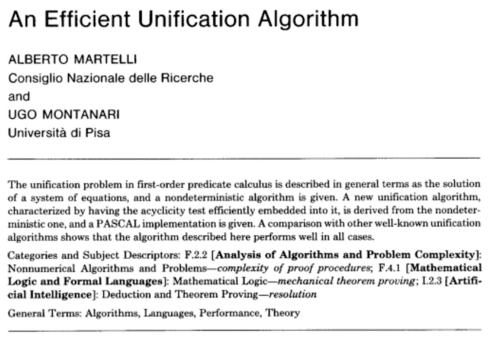
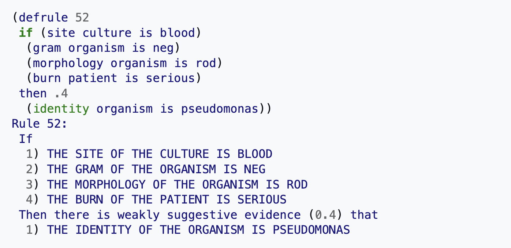
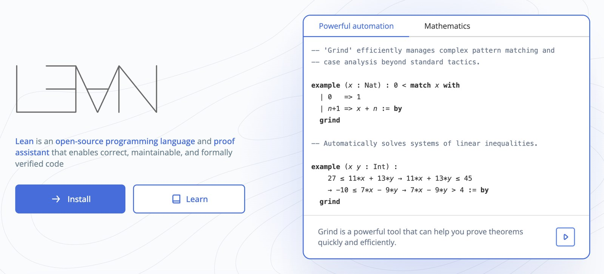
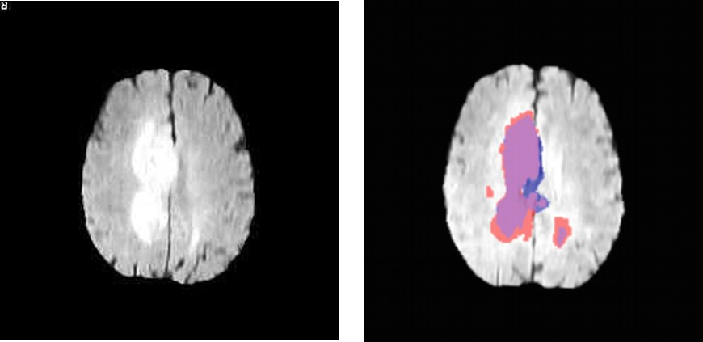
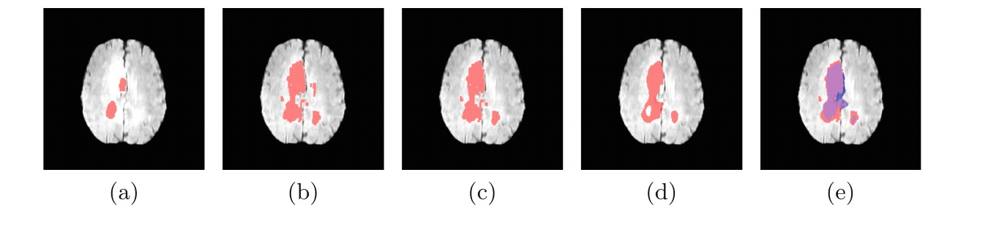

Lecture 0 — motivation. Not in the exam programme.
Programming Languages Lab · University of Pisa
Vincenzo Ciancia, CNR-ISTI
vincenzo.ciancia@isti.cnr.it · github.com/vincenzoml/PLDW
You already know how to write a program.
So why would anyone build a language instead of just writing the program?
A little history, older than computers. Then one real case.
Chomsky, 1956–1959. A language is a set of strings; a grammar is a finite device that generates it. Regular, context-free, context-sensitive, unrestricted: each level has its own machine.
He was studying English. One year after Syntactic Structures, the ALGOL 60 report defined a programming language with a context-free grammar.
Every parser you will write in this course descends from that idea.
Colorless green ideas sleep furiously.
Chomsky, 1957
Grammatically perfect. Meaningless.
A grammar says which sentences exist. It does not say what they mean.
The grammar takes one lecture. The meaning takes the rest of the course.
What's in a name? That which we call a rose
by any other name would smell as sweet.
Romeo and Juliet
Program semantics is the art of giving meaning to symbols — and of making sure that two people, or a person and a machine, mean the same thing by them.
Before the case
SYMBOLIC
Logic and rule-based systems. Explicit knowledge representation. Reasoning chains a person can follow.
SUBSYMBOLIC
Statistical and neural approaches. Distributed representations. Patterns learned from examples.
HYBRID
Learned perception, structured reasoning. Wanted wherever interpretability, robustness and safety are required — medicine first.
No. The difficult part is symbolic AI.
…and symbolic AI is, above all, a matter of languages.
Two traditions, one axis. Shaded: the "AI winters", when promises outran results and funding stopped. The diamonds are the recent hybrids: a network proposes, a symbolic search or a proof checker disposes.
1936 · THE TURING MACHINE
The head reads a symbol, writes one, moves left or right, and changes state according to a finite table. That is all — and it is enough to compute anything that can be computed.
A universal machine reads another machine's table from its tape and imitates it: the idea of a program as data, and of an interpreter.
1943 · McCULLOCH AND PITTS
A unit fires when enough of its inputs fire: a threshold. With the right thresholds, one unit computes AND, another OR, and networks of them compute any logical formula.
The two traditions start from the same place: the first neural network was a piece of logic.
1957 · THE PERCEPTRON
Rosenblatt's perceptron adjusts its weights from examples until it separates two classes. It was built in hardware, the Mark I, with a camera of 400 photocells.
The press went further: the New York Times reported that the Navy expected it to "walk, talk, see, write, reproduce itself and be conscious of its existence".
1966 · ELIZA
> Men are all alike.
IN WHAT WAY?
> They're always bugging us about something.
CAN YOU THINK OF A SPECIFIC EXAMPLE?
> Well, my boyfriend made me come here.
YOUR BOYFRIEND MADE YOU COME HERE?
Joseph Weizenbaum, MIT. The DOCTOR script plays a psychotherapist with rules like my X made me Y → YOUR X MADE YOU Y? No understanding at all.
People confided in it anyway: Weizenbaum's secretary asked him to leave the room. The ELIZA effect is older than every LLM.
1997 · DEEP BLUE
IBM's Deep Blue beats Garry Kasparov over six games. It learns nothing: it explores about 200 million positions per second and scores them with rules written by chess experts.
Symbolic AI at its peak — brute force plus human knowledge.
2012 · ALEXNET
A convolutional network with 60 million parameters, trained on two gaming GPUs, recognises ImageNet photos with a top-5 error of 15.3% — the runner-up had 26.2%.
Within two years almost every entry in the competition is a deep network.
2016 · ALPHAGO
Go has far too many positions to search blindly. AlphaGo uses neural networks to suggest good moves and judge positions, and a tree search to check them. It beats Lee Sedol 4 to 1.
Move 37 of game 2 looked like a mistake to every expert watching. It was not.
2024 · ALPHAPROOF
A language model proposes proofs of olympiad problems in Lean; Lean's checker accepts or rejects each step. Together with AlphaGeometry, it reaches silver-medal level at the International Mathematical Olympiad.
The generator can be wrong. The checker cannot.
1936 · ON COMPUTABLE NUMBERS
A machine with a tape, a head and a finite table of rules defines what it means to compute — and shows that some problems no machine can solve.
1950 · COMPUTING MACHINERY AND INTELLIGENCE
Replaces "can machines think?" with a game you can actually play: can a machine's written answers be told apart from a person's? The imitation game, later the Turing test.
I propose to consider the question, "Can machines think?"
A. M. Turing, Mind, 1950
A two-month workshop at Dartmouth College, funded by the Rockefeller Foundation.
The proposal, written in 1955 by John McCarthy, Marvin Minsky, Nathaniel Rochester (IBM) and Claude Shannon (Bell Labs), is where the words "artificial intelligence" first appear.
Allen Newell and Herbert Simon arrive with the one program that actually runs: the Logic Theorist.
WHAT THEY WANTED TO STUDY
automatic computers · how a computer can be programmed to use a language · neuron nets · the size of a calculation · self-improvement · abstraction · randomness and creativity
THE OPTIMISM
"a significant advance can be made in one or more of these problems if a carefully selected group of scientists work on it together for a summer."
…every aspect of learning or any other feature of intelligence can in principle be so precisely described that a machine can be made to simulate it.
McCarthy, Minsky, Rochester, Shannon — Dartmouth proposal, 1955
LOGIC THEORIST · 1956
Newell, Simon and Shaw. Proves theorems of propositional logic; reproduces proofs from Principia Mathematica. Often called the first AI program.
GENERAL PROBLEM SOLVER · 1957–59
A universal method: search through a space of states. Impractical at scale, but the origin of heuristic search and planning.
Research focused on knowledge representation, heuristics and automated theorem proving.
Intelligent behaviour was framed as heuristic search through structured problem spaces, governed by production rules.
Symbol systems promised transparency, compositionality and explainability.
(defun ancestor-p (x y)
(or (parent-p x y)
(some (lambda (z)
(and (parent-p x z)
(ancestor-p z y)))
(people))))
written in today's Common Lisp
John McCarthy designs a language whose data are symbolic expressions — and whose programs are symbolic expressions too.
His 1960 paper defines eval: an interpreter for LISP, written in LISP.
The first famous interpreter is also the first program in this course's spirit.
\( \forall X, Y, Z.\;\; \mathit{parent}(X, Z) \wedge \mathit{ancestor}(Z, Y) \;\rightarrow\; \mathit{ancestor}(X, Y) \)
a Horn clause
parent(ada, bea).
parent(bea, cid).
ancestor(X, Y) :- parent(X, Y).
ancestor(X, Y) :- parent(X, Z), ancestor(Z, Y).
?- ancestor(ada, Who).
Who = bea ;
Who = cid.
Colmerauer and Roussel, Marseille; Kowalski gives Horn clauses a procedural reading. You state facts and rules; the machine searches for proofs.
The engine is Robinson's resolution (1965), and at its heart is unification: finding values that make two terms equal.
Meanwhile
…in Pisa.
A leaning tower, a university, and the oldest computer science department in Italy: the first Italian degree in computer science started here, in 1969.

Alberto Martelli (CNR) and Ugo Montanari (University of Pisa): an efficient unification algorithm, still the textbook version.
Logic programming, type inference in functional languages, and many program analyses run on it.
Every time a compiler infers a type, as in ML or Haskell, unification is at work.

MYCIN (Shortliffe, Stanford) chose antibiotics from about 600 rules — and could show the rules behind each answer.
Expert systems had real commercial success in medicine, engineering and finance.
Rule 52 is written twice: once for the interpreter, once for the doctor who has to trust it.
BRITTLENESS
Fails with incomplete knowledge. Poor handling of ambiguity. Limited to carefully designed domains.
KNOWLEDGE ACQUISITION BOTTLENECK
Encoding rules is slow and error-prone; capturing an expert's knowledge does not scale beyond narrow domains.
Result: AI winters, and a shift toward learning from data.
And what if it could work?
The bottleneck was never the logic. It was us: writing the rules, and the long deductions, by hand.
Large language models may turn out to be better than we are at building complex symbolic deductions — as long as something checks every step.
| 1943 | McCulloch & Pitts: a mathematical model of the neuron |
| 1957 | Rosenblatt: the perceptron |
| 1969 | Minsky & Papert: what one layer cannot learn (XOR) |
| 1986 | Rumelhart, Hinton & Williams: backpropagation |
| 1989 | LeCun: LeNet, a convolutional network that reads digits |
In between, AI had diversified: Bayesian networks for reasoning under uncertainty, support vector machines, reinforcement learning, statistical language processing. Deep networks were layered on top.
2012: a deep convolutional network wins ImageNet by a wide margin. Foundation models follow.
A parenthesis
How did we get from recognising cats in photos to a machine that writes programs?
In about ten years. And it changed what computer science is.
A model trained once, on broad data and at scale, that can then be adapted to a wide range of tasks.
TRAINED ON EVERYTHING
Text, code, images — far more than any single task needs.
SELF-SUPERVISED
No labels: the training signal is the data itself. For language, predict the next word, billions of times.
ADAPTED, NOT RETRAINED
One model, many uses: by prompting, by fine-tuning, by giving it tools.
Bommasani et al., On the Opportunities and Risks of Foundation Models, Stanford CRFM, 2021 — where the name comes from
The most capable general-purpose foundation models of the moment — at the edge of what is technically possible.
A moving target: last year's frontier is this year's baseline.
FEW, AND EXPENSIVE
Built by a handful of labs; training costs grow with every generation.
WATCHED
Evaluated for dangerous capabilities before release. The term went public in 2023: the Frontier Model Forum, and the AI Safety Summit at Bletchley Park.
2021
The model finishes the line you are writing.
2022
You describe the program; it writes a draft.
2024
It runs code, reads the output, tries again.
2025
It works on a whole repository, for hours, and you review.
Writing code got cheap. Knowing what to write, and whether it is right, did not.
…and so we got to
Claude — which helped build the slides you are looking at.
Drafted, laid out and measured in a conversation with it; corrected, many times, by a person who knew what had to be said.
BRITTLE
Spurious correlations; fails when the data shift.
OPAQUE
Explanations are added afterwards, not built in.
COSTLY TO MOVE
A new domain means new training.
CAUSALLY BLIND
Struggles with the effect of interventions.
Direction: learned perception + structured reasoning.
Many voices, one thesis
The practical decision is rarely "symbolic versus neural", but how to sequence, couple and govern them.
Constraints, modularity, verifiable properties.

Proof assistants check every step of a proof mechanically.
They will be used more and more as LLM agents learn to use them: the model proposes, the checker disposes.
A generator you cannot trust, next to a checker you can.
| Antiquity → 19th c. | Aristotle's syllogisms → Frege's predicate logic | formal systems for reasoning |
| 1854 | Boole | logic as algebra: the basis of digital circuits |
| 1930s–40s | Gödel, Turing, Church | the limits of logic, and models of computation |
| 1956 | Logic Theorist | the first program to prove theorems |
| 1965 | Robinson's resolution | efficient deduction |
| 1972 | Prolog | knowledge and inference in one language |
| 1980s | description logics | ontologies, medical informatics, the semantic web |
| 2010s–today | neuro-symbolic AI | statistical learning with logical reasoning |
What are the languages of AI?
This is not an AI course. It teaches the other half: how to design the language in which something can be written down, read, and checked.
One real case, in five slides · how it works is lecture 11

Before radiotherapy, someone draws the tumour on the scan: which voxels are tumour, which are not.
A human does it, slice by slice. Slow, tiring, and different experts draw different boundaries.
Who is responsible when it is wrong?
Guidelines are published. Does the program follow them?
Can you certify a procedure you cannot read?
A new idea has no training data behind it.
None of these is about accuracy. All are about a person reading the procedure.
let brain = !touch(flair <. 0.1, border)
let pflair = percentiles(flair, brain, 0.5)
let hyperIntense = flt(5.0, pflair >. 0.95)
let veryIntense = flt(2.0, pflair >. 0.86)
let tumour = grow(hyperIntense, veryIntense)
VoxLogicA — Belmonte, Ciancia, Latella, Massink, TACAS 2019
The brain is what does not touch the border. The tumour is the brightest 5%, grown into the brightest 14% around it.
A radiologist can read that — and disagree with it.
You cannot disagree with a weight matrix.
Not
Instead:
The operations of the domain, promoted to primitives of the language. That is what makes it a domain-specific language rather than a library with a fancy name.
Choosing those words took years. Implementing them took much less.

Now
Take a task that everyone attacks with machine learning — delineating a brain tumour — and attack it with a readable specification only.
No training, no fitted weights. Only the words of the domain, composed in the language.
UNPUBLISHED
So you get no numbers today. You get the idea and the working method — the parts you can copy.
01 · EXPRESSIVENESS
For each image, let the parameters be chosen knowing the right answer. That is not a method: it measures whether the language can express a good delineation at all.
02 · FAILURES
Where it cannot, look at the images that fail and ask which word is missing from the language. Add it. Measure again.
03 · CALIBRATION
Only then the harder question: choosing the parameters without the answer. That is the next step.
Designing the language comes first. Using it comes second.
THE PERSON
What must never happen. Which failure matters. When a number is suspicious. What the domain — the guidelines, the anatomy — requires.
THE AGENT
Writes the programs in the language, runs the sweeps, tabulates, renders the images, proposes the next step.
The agent never writes arbitrary code into the result: it writes expressions in a small language whose primitives a person chose, and whose output a person can look at.
The parallel engine and its cache — the interpreter that runs VoxLogicA 2 — were designed in a dialogue with an AI coding agent.
The person kept stating invariants: memory must stay bounded; every node goes through one code path; weigh a cached result by what it cost to compute, not by its size; if the working set is too large, the scheduler is the bug, not the cache.
The architecture is the fixed point of that loop.
WITHOUT A LANGUAGE
An idea costs a training run: hours, a new model, and a result nobody can read.
WITH A LANGUAGE
An idea costs two lines. You add an operator, re-run, look at the picture. When hypotheses are cheap, you try the strange ones.
The language is not an implementation detail of the method. It is the method.
A computational paradigm in which foundation models translate human intentions into domain-specific neuro-symbolic programs whose execution remains explicit, inspectable, and verifiable.
SYMBOLIC
reasons with symbols and rules
NEURO-SYMBOLIC
combines learning and symbolic reasoning
THE RETURN
generative models build, compose and modify the neuro-symbolic programs: the level above, the one that programs them
Supported by
Anthropic's AI for Science program
V. Ciancia, position paper in preparation.
A domain-specific language is how a person keeps hold of an automatic system:
a vocabulary that someone designed on purpose.
An interpreter for a small language is, today, a couple of hours of work with an assistant.
Writing it is no longer the hard part — you are expected to use those tools.
What does not get cheaper
knowing which primitives belong in the language, and which do not;
knowing what each one means, exactly, including at the edges;
showing a case where your language earns its keep;
saying what it cannot do.
01
A language is a way of keeping a human in control of an automatic system.
02
Building one is now cheap. Deciding what goes in it is not.
03
That decision — what to make expressible, and what to leave out — is the actual content of this course.
Part B: what a language is made of. Forty lines of Python.
A. M. Turing. On Computable Numbers, with an Application to the Entscheidungsproblem. Proc. London Math. Soc. 42, 1936.
A. M. Turing. Computing Machinery and Intelligence. Mind 59, 1950.
J. McCarthy, M. Minsky, N. Rochester, C. Shannon. A Proposal for the Dartmouth Summer Research Project on Artificial Intelligence, 1955.
A. Newell, H. A. Simon. The Logic Theory Machine. IRE Trans. Information Theory 2(3), 1956.
J. McCarthy. Recursive Functions of Symbolic Expressions and Their Computation by Machine. CACM 3(4), 1960.
J. A. Robinson. A Machine-Oriented Logic Based on the Resolution Principle. JACM 12(1), 1965.
R. Kowalski. Predicate Logic as Programming Language. IFIP Congress, 1974.
A. Colmerauer, P. Roussel. The Birth of Prolog. HOPL-II, 1993.
E. H. Shortliffe. Computer-Based Medical Consultations: MYCIN. Elsevier, 1976.
A. Martelli, U. Montanari. An Efficient Unification Algorithm. ACM TOPLAS 4(2), 1982.
W. McCulloch, W. Pitts. A Logical Calculus of the Ideas Immanent in Nervous Activity. Bull. Math. Biophysics 5, 1943.
F. Rosenblatt. The Perceptron. Psychological Review 65(6), 1958.
M. Minsky, S. Papert. Perceptrons. MIT Press, 1969.
D. Rumelhart, G. Hinton, R. Williams. Learning Representations by Back-Propagating Errors. Nature 323, 1986.
S. Hochreiter, J. Schmidhuber. Long Short-Term Memory. Neural Computation 9(8), 1997.
A. Krizhevsky, I. Sutskever, G. Hinton. ImageNet Classification with Deep Convolutional Neural Networks. NeurIPS, 2012.
T. Mikolov et al. Efficient Estimation of Word Representations in Vector Space. arXiv:1301.3781, 2013.
D. Bahdanau, K. Cho, Y. Bengio. Neural Machine Translation by Jointly Learning to Align and Translate. ICLR, 2015.
A. Vaswani et al. Attention Is All You Need. NeurIPS, 2017.
J. Devlin et al. BERT: Pre-training of Deep Bidirectional Transformers for Language Understanding. NAACL, 2019.
T. Brown et al. Language Models are Few-Shot Learners. NeurIPS, 2020.
J. Kaplan et al. Scaling Laws for Neural Language Models. arXiv:2001.08361, 2020.
R. Bommasani et al. On the Opportunities and Risks of Foundation Models. arXiv:2108.07258, 2021.
L. Ouyang et al. Training Language Models to Follow Instructions with Human Feedback. NeurIPS, 2022.
Y. Bai et al. Constitutional AI: Harmlessness from AI Feedback. arXiv:2212.08073, 2022.
D. Silver et al. Mastering the Game of Go with Deep Neural Networks and Tree Search. Nature 529, 2016.
G. Marcus. The Next Decade in AI. arXiv:2002.06177, 2020.
THE LANGUAGE · TACAS 2019
G. Belmonte, V. Ciancia, D. Latella, M. Massink. VoxLogicA: A Spatial Model Checker for Declarative Image Analysis. TACAS, LNCS 11427, 2019.
SYMBOLIC AND HYBRID · ARTIFICIAL INTELLIGENCE IN MEDICINE 2025
G. Belmonte, V. Ciancia, M. Massink. Symbolic and Hybrid AI for Brain Tissue Segmentation Using Spatial Model Checking. Artificial Intelligence in Medicine 167, 103154, 2025.
VOXLOGICA 2 · AISOLA 2025
G. Belmonte, V. Ciancia, M. Imbriani. Two Hybrid-AI Case Studies for VoxLogicA 2. Presented at AISoLA 2025, to appear.
The whole story of the language is lecture 11.